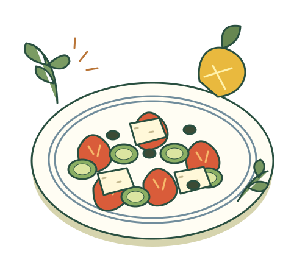
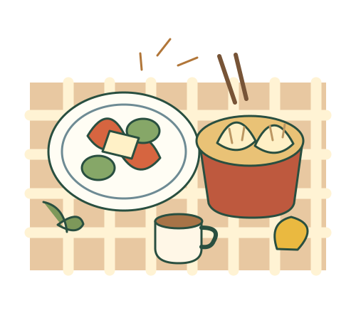
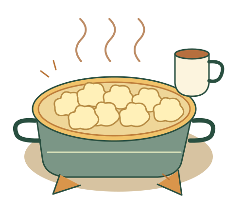
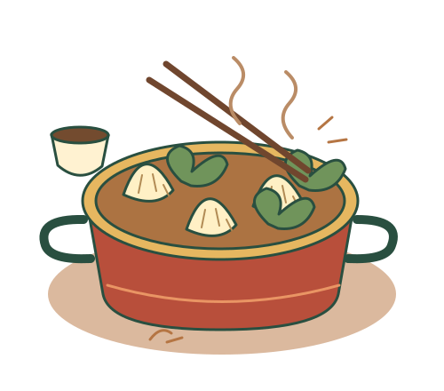

Week 01 · 6 dinners
Greece
Lemon, filo & a little sunshine.
4 most days · 3 on Thursday · Saturday off.
A family food festival, one meal at a time. Greece, the United Kingdom and China—with recipes that fit our table and shopping lists for our K-store.

Pass the plates. Try something new.
Each stop has a day-by-day menu, full recipes and a shopping list with every side and separate portion included.

Lemon, filo & a little sunshine.
4 most days · 3 on Thursday · Saturday off.

Cosy classics, made for us.
4 Monday–Friday · 3 on the weekend.

Fold, sizzle, gather.
4 every day · 3 meat + 1 meat-free when needed.
No peanut ingredients, peanut oil, salmon or other red-fleshed fish in this plan. “May contain peanuts” is okay for this household. The fish dinner uses cod or haddock.
Usually three meat-eaters and one who avoids meat and poultry. Fish, eggs and dairy are okay. Shared bases plus small separate portions keep cooking manageable.
K-Citymarket Helsinki Ruoholahti is our shopping reference. Finnish search names, selected product links and practical substitutions are included.
Quantities use standard adult-sized portions; adjust for appetites. Lists cover the meals shown, not additional breakfasts, snacks or drinks. K-Ruoka catalogue links are references, not live Ruoholahti stock checks; select the store on K-Ruoka and check the current ingredient labels.
Keep the judging playful. A surprising favourite counts as a very good result.
Your answers are saved on this browser, not shared between devices.